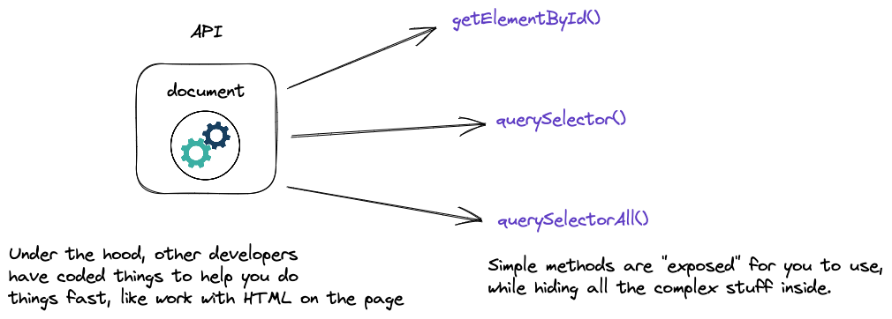
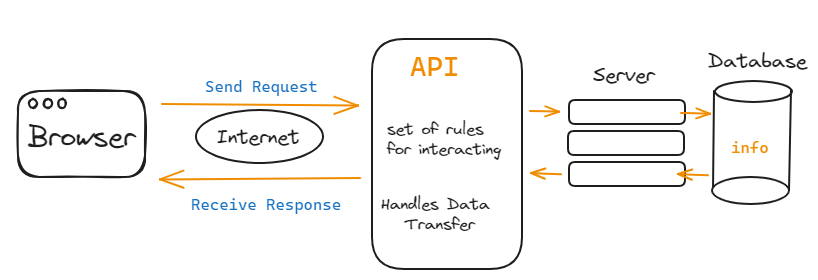
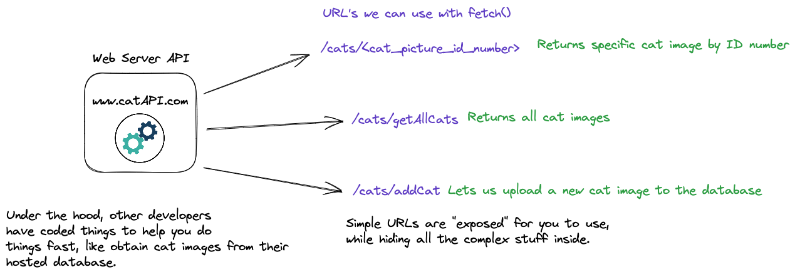

Let's take a look at APIs in general. The acronym
API
stands for: Application Programming Interface, but
what does that really mean?
It's been described by a certain professor as:
"code that's already been written by other developers,
designed to make our jobs easier"
Randy Bobandy
APIs can be located locally, or online. One local API web
developers use constantly (to repeat another thing that
professor has said) is the
DOM or
document object model. So, whenever somebody uses
document.getElementByID(),
querySelector(), or
querySelectorAll() in JavaScript, they're using
an API.

Source: Randy Bobandy
Another API constantly in use by developers is called
Event. Yup, you guessed it, every time
.addEventListener is used it's using the Event
API.
Both the DOM and
event are great representations of
code that's already been written that makes our lives
easier. I don't know about you guys but at this point in my
learning if I had to figure out all of the code needed to
achieve the same thing I would be in trouble.
Regarding Web APIs specifically, the technical definition is
“an API that can be accessed using the HTTP protocol”. Super
helpful, right? It simply means an API that can be used and
accessed over the internet.
Therefore, a web API is a block of code that has been
written by somebody else that makes our lives easier which
can be accessed over the internet. Some are free to use
while others require payment, almost all require users to
sign up for an API key.
How do they work??
Web APIs are like a bridge between your code and the
resources on a server that you're trying to access, whether
it be a data source, an application, or anything in between.
Most web APIs (free or paid) require their users to register
for an account and API key to be able to use their
services/resources.
Sets rules you need to follow for interacting with it
(including authenticating the user via API key).
Manage the data transfer that happens between the code
(like your website) making the request and the server
that sends a response (often in JSON and less often in
XML format).

Rules? What rules? How do we know what those rules are?
Those rules will (hopefully) be explained in the specific
APIs documentation. Another thing that will be explained is
the specific protocol the API is using.
The protocol an API uses specifies how it connects to the
internet, how other parties connect to it, and how it
receives and transmits information. There are several API
protocols in use today:
REST,
SOAP,
RPC, and GraphQL,
to name a few. That being said, the REST or
Representational State Transfer protocol (which
technically isn't a protocol at all but a set of guidelines)
is the most widely used for Web APIs today. Because of this
it's the one we're going to focus on.
The
REST
protocol works by using
HTTP's
built in methods: GET, POST,
PUT, and/or DELETE which (with a
valid API key) connect to the API's server using specific
URLs known as Endpoints.
What are these HTTP Methods?
HTTP or Hypertext Transfer Protocol is the
foundation of how everything communicates over the internet.
There are nine HTTP methods that can be used, however the
four main ones that are utilized to communicate with web
APIs are GET, POST,
PUT, and/or DELETE.
GET is the HTTP method used to make requests to
a server (whereas POST, PUT,
and/or DELETE are used to submit, create, or
delete resources on that server).
Since (most) public web APIs only allow
GET requests and because GET is
also the HTTP method being called when we use
fetch() in JavaScript it's what we'll be
focusing on.
Endpoints are simply URLs that can be used to send
requests to an API.
What do they do?
When you send a request to an API it's (generally) made up
of 4 parts:
Method: The HTTP method used to make the request,
GET in our case.
URL/Endpoint: The address of the API web server
that you're requesting data from.
Parameters: The data that defines what we're
looking for in our API request.
Headers: Generally contains an API Key to
authenticate the request as well as specifies the format
of the data being requested.
The response is also made up of four parts:
Response Status code: The HTTP status code that
is returned by the API which let's us know if the
request was successful or not. This code can be found in
the devtools (if you remember our API class with Randy),
the most common are 200 (OK), 404 (Not Found), and 500
(Internal Server Error).
Data: The data that is returned by the API
(usually in
JSON
sometimes in
XML
format).
Headers: Used to specify the format of the data
being returned (which hopefully matches the type
specified in the request).
Links: Provides more detail about the data, often
including links to source, etc.
There are several types of parameters used in REST APIs, the
most common and the one we'll be using is known as a
query string. You've likely seen them in the
browser's address bar, most likely after looking for
something from a search engine like Google.
You can see them in the query string at the end of a URL or
Endpoint, after the ? character.
For example:
https://api.themoviedb.org/3/movie/upcoming?language=en-US&page=1, the query string parameters are the
language=us and the page=1
In the headers is where you will specify the format of the
data you are requesting from the API, more often than not a
JSON file, as well as authenticating your request by
including your API key.
For example, your code may look something like this: headers: {
accept: "json",
Authorization: "APIKEY",
}
As you can see they're accepting json file format and
authorizing with their API key.
Once the API receives a valid request it will run a function
(or more likely multiple functions depending on how complex
the API is) and return whatever was requested.

Source: Randy Bobandy
This could be as simple as a single image, something more
complex like a video, or an entire database of info and
different media all within a json file. If we take the TMDB
API as an example, we'll be requesting different resources
from a database of movie data (like images, ratings info,
release dates, etc.). Since the data in the APIs response is
in a
JSON file,
we will need to parse it using .then as part of
our fetch().
Remember, the API will only return the data that was
requested. It is up to the developer to properly
handle/parse the response and display the results.
Why and Where Would you use them?
From a development perspective there are several reasons
where and why you would use APIs. Arguably the two biggest
are:
Functionality
You can use them to provide access to certain features
and functions that would be difficult to build yourself.
Speed
You can use them to reduce development time.
Utilizing existing APIs is a good way to use existing
resources compared to having to build them from
scratch.Because of this you can offer a variety of
connectivity to local weather forecasts, traffic updates,
social media, nearly anything.
A real world example (which may sound familiar) that
highlights both of these reasons is if someone wanted a
website that included a selection of changing cat images.
One option is implementing this ourselves.
That would entail spending time scouring the web trying to
find as many copyright free images of cats as possible,
building the database, filling it with those images, paying
to host it on a server, and every other step in between.
Or, we could choose the second option: we use the
web API that's already built to do just that.
Other real-word examples of using APIs:
An e-Commerce Site
It needs a secure way for customers to pay as well as
being able to ship/track their orders. You could code
those from scratch or use existing APIs like the ones
available from Paypal and Fed Ex.
A Fantasy Football League
Participants want to be change their roster, to look at
players stats, and any sport specific news stories, all
of which updates in real-time. There are APIs for that.
Movie Database
You need to create a movie database using an API for a
school project... hint hint.
As it's plain to see, there are a variety of reasons where
and why individuals would want to use one or more web APIs.
If we come back to the quote from section 1:
code that's already been written by other developers,
designed to make our jobs easier
the amount of use cases becomes nearly infinite.
Pros & Cons
PROS
Saves Time
Using web APIs allows developers to utilize code
that is tested and functional instead of having to
build it from scratch.
Saves Money
Developing and maintaining certain functions
in-house may not be feasible for individuals or
smaller businesses. Using an API to “outsource” it
can be more cost-effective.
More Features
Web APIs often have extensive feature sets built in,
whereas in-house developers may not have the time or
skillset to build.
Skillset
The developers writing the API are usually experts
in their respective fields. Utilizing the API takes
advantage of that expertise.
Scalability
Most large web APIs are built to handle significant
volumes of requests and can do so without issue.
Smaller companies may not be able to handle the
increased traffic.
Better UX
Providing users with extra features and services via
APIs can enhance their experience using your site or
app
Cons:
Third-Party Dependency
Arguably the biggest disadvantage. Access is totally
dependent on the availability and reliability of the
API host. If it goes down or experiences other
problems, then it's no longer useable. Also, if they
make changes, it can disrupt your code forcing you
to spend extra time fixing it
Lack of Documentation
Lack of, or - even worse - confusing documentation
of how to use or the API makes it difficult to
implement (think of Frazer looking at Instagram or
anything from Meta really).
Geographical Access
Some parts of the world may not be able to access,
or will actually block access to the hosting
provider of the API.
Security
Using web APIs introduces possible security risks
and additional vulnerabilities. Especially when
considering personal or payment information.
Lack of Customization
Web APIs have specific, pre-built functionality
which may not suit every use case forcing developers
to work within the confines of the API
Limits Learning
This is case specific but if a developer only uses
APIs and doesn’t learn to code anything themselves,
they limit their own development and skillset.
Code Demo
Credit and References
We would also like to thank Randy "Bobandy" Gulak for use of
his teaching slides in our presentation and site.